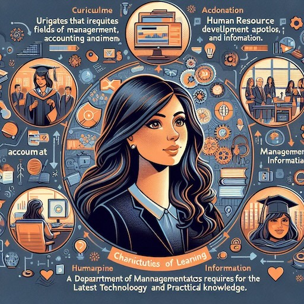
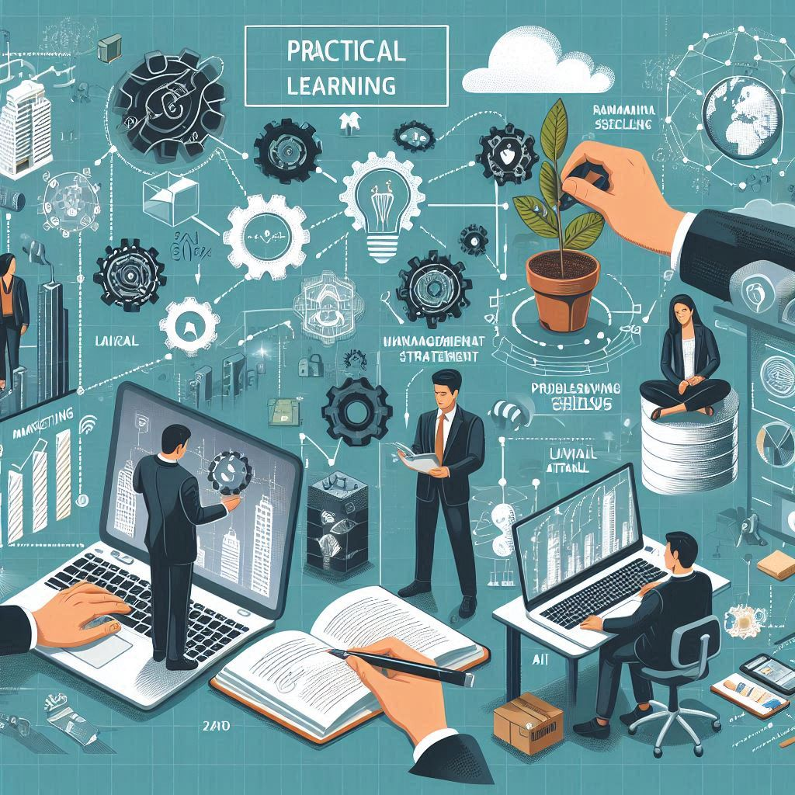
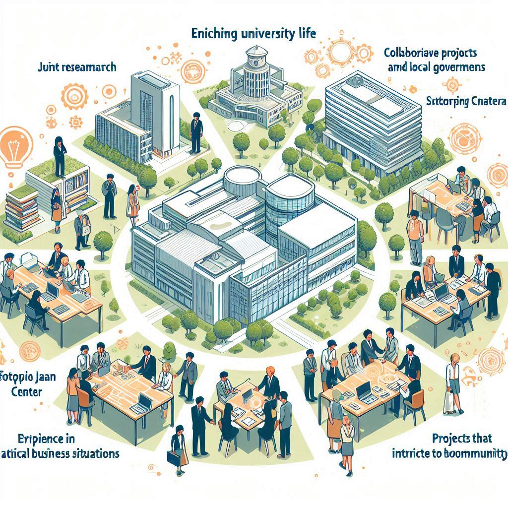
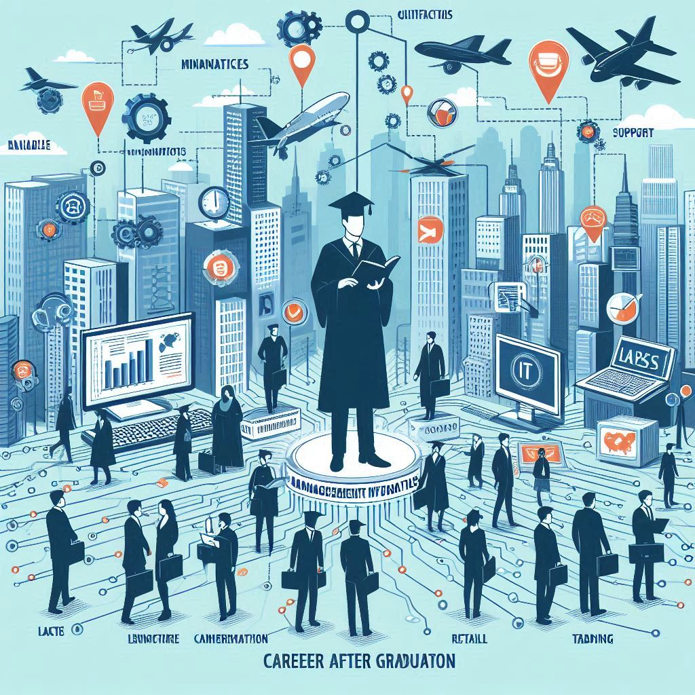

経営、会計、情報の3つの分野を融合したカリキュラムを提供し、企業のDXに求められる人材を育成します。 経営情報学科では、最新のテクノロジーと実践的な知識を組み合わせ、新しい価値を創造する力を身につけることができます。
経営戦略やマーケティングの基礎から応用までを学び、企業や組織の運営力を養います。 また、会計学では財務分析やコスト管理のスキルを習得し、企業の経営状況を的確に把握する力を身につけます。 IT分野ではAI、IoT、ビッグデータなどの最新技術を活用し、デジタル社会での問題解決能力を高めます。
企業や自治体との連携プロジェクトを通じて、実際のビジネスシーンでの経験を積むことができます。 ソフトピアジャパンセンターでの共同研究や、地域社会に貢献するプロジェクトに参加することで、学んだ知識を実践に活かす力を養います。
経営情報学科の卒業生は、多様な業界で活躍しています。 IT、小売、商社など、幅広い分野での就職実績があります。 また、取得可能な資格も豊富で、専門性を高めるためのサポートも充実しています。
